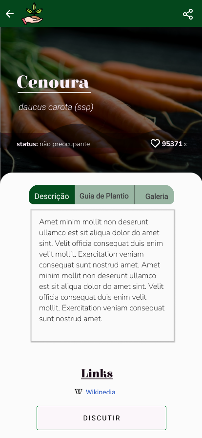
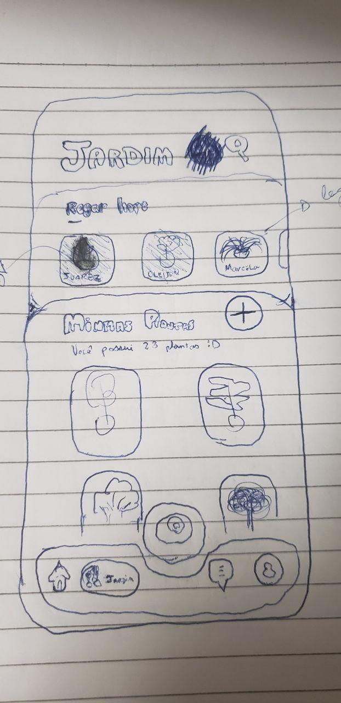
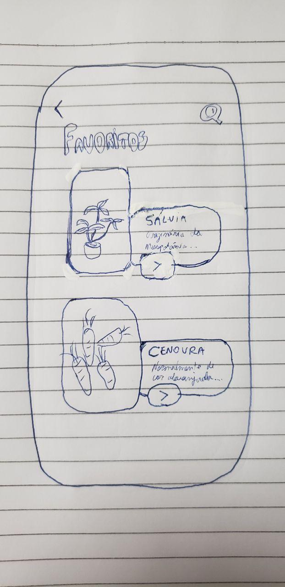
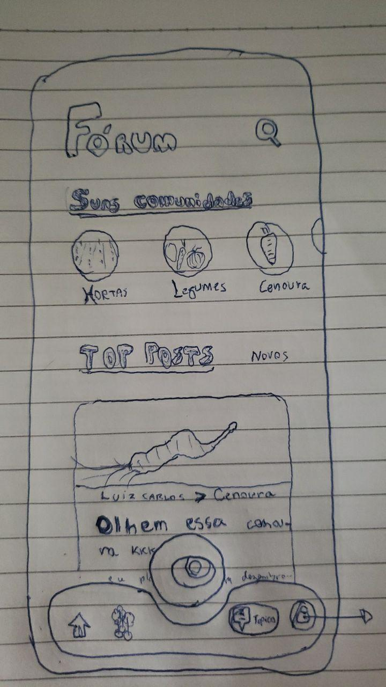
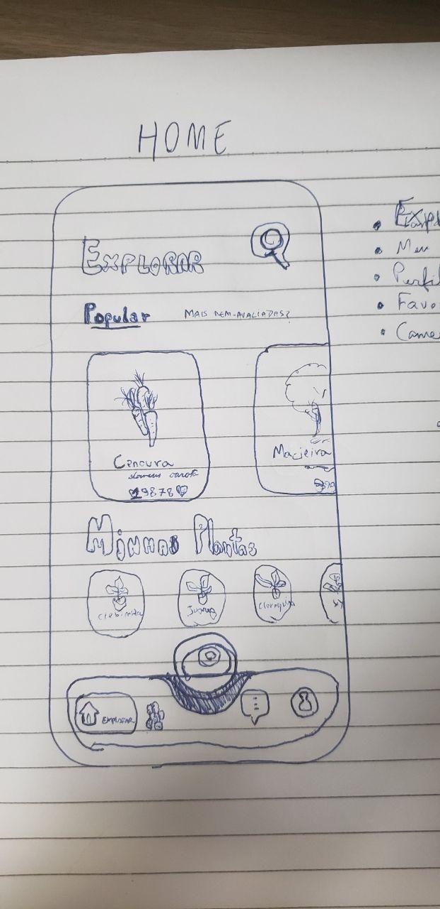
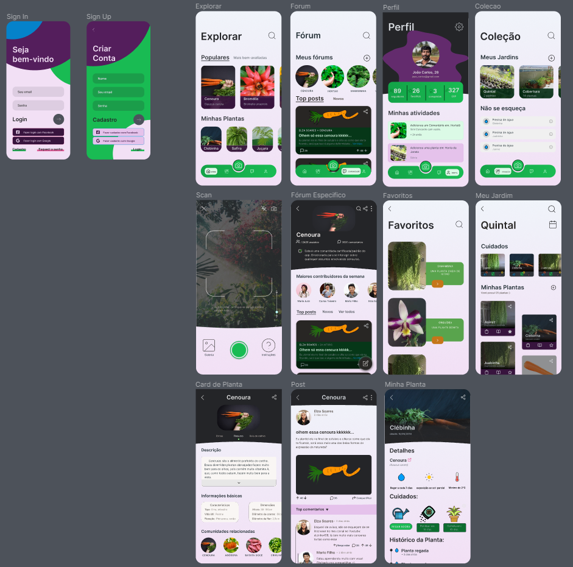

Documentação do protótipo
| versao | autor | link | mudanças feitas |
|---|---|---|---|
| 0.1 | @guilhermedelyra | https://cloud.protopie.io/p/9ab2318f51 | adicionando tela de login |
| 0.2 | @guilhermedelyra | https://cloud.protopie.io/p/3d26a66b0c | adicionando tela de cadastro & mudando icone |
| 0.3 | @guilhermedelyra | https://builderx.io/app/hlufjlxrbyg44sc0ckgg8gkgs0soo4 | adicionando tela Home & migrando para builderx |
| 0.4.1 | @guilhermedelyra, @faco400 | https://www.figma.com/file/0c2pVNNqCLmdmpmhnuco3Y/card-de-planta?node-id=1%3A2 | tela Card de Planta, figma |
| 0.4.2 | @guilhermedelyra, @faco400 | https://www.figma.com/file/0c2pVNNqCLmdmpmhnuco3Y/card-de-planta?node-id=1%3A2 | tela Jardim, figma |
| 1.0 | @guilhermedelyra | https://www.figma.com/file/aZt1BiKEaVJilKd3aXWRcl/GaiaDex---Revamp?node-id=0%3A1 | adicionando primeira versão estavel |
Descrição
Nas versões 0.1 e 0.2 foram utilizadas as ferramentas Adobe XD e Protopie; Na versão 0.3, após outras pesquisas, foi decidido migrar para o BuilderX, que é capaz de converter o protótipo em código React Native. Na versão 0.4, o BuilderX foi descartado por conta da pouca impractibilidade de se desenvolver o protótipo neste e, também, pela qualidade dúbia de código gerado pelo mesmo.
0.1
0.2


0.3


Explicando o Header
Linha principal
- home -> feed de noticias, incluindo topicos mais comentados nas comunidades e subreddits q vc segue
- meu jardim (pote) -> local p manusear tuas plantas, setar notificaçao nelas etc
- procurar (lupa) -> procurar plantas pelo nome, com alguns cards embaixo ajudando a filtrar categorias por ex
- mercado (sacola) -> local onde vc pode pesquisar produtos organicos, com a facilidade de comprar igual à do ifood por ex (de ja pagar no cartao de credito etc)
- menu (sanduiche) -> coisas da sua conta, gerenciar perfil, seus favoritos, etc
Linha secundária
- carrinho = carrinho de compras...
- sino = notificaçoes, seja de threads de topicos q vc ta seguindo, seja de seus posts etc
0.4.1
| opção 1 | opção 2 | opção 3 | opção 4 |
|---|---|---|---|
 |
 |  |
 |
0.4.2
| opção 1 | opção 2 | opção 3 | opção 4 | opção 5 | opção 6 |
|---|---|---|---|---|---|
 |
 |
 |
 |
 |
 |
1.0
papel
| img 1 | img 2 | img 3 | img 4 | img 5 | img 6 | img 7 | img 8 | img 9 | img 10 | img 11 |
|---|---|---|---|---|---|---|---|---|---|---|
|  |  |  |
 |  |  |
 |
 |
 |
 |
 |
"wireframe"

prototipo
